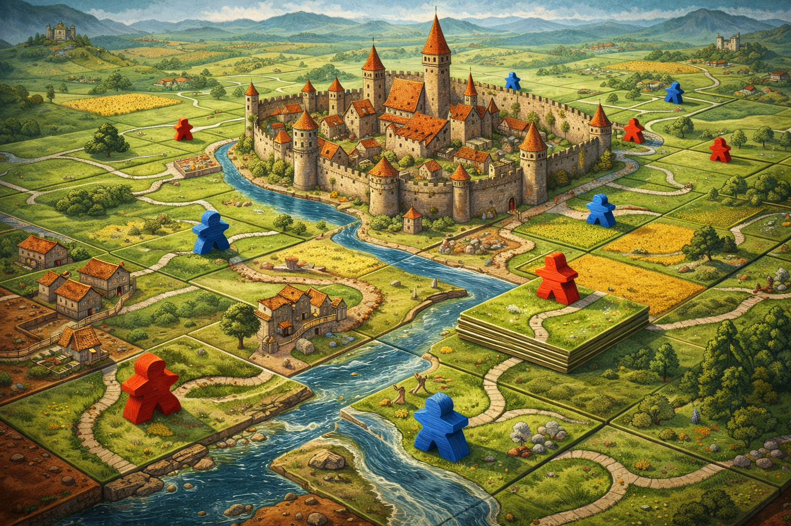
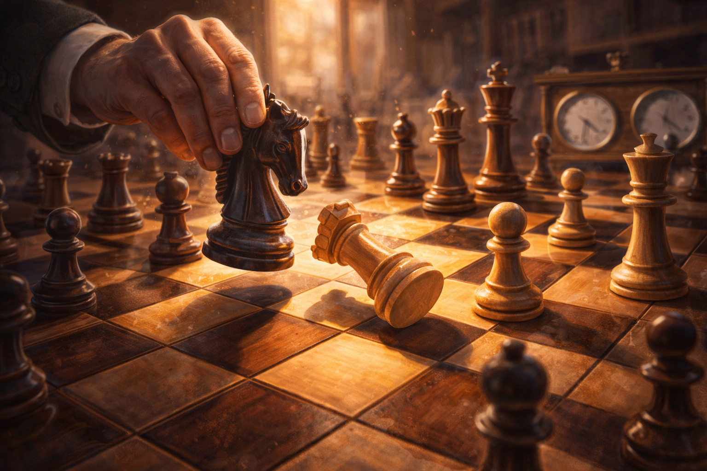
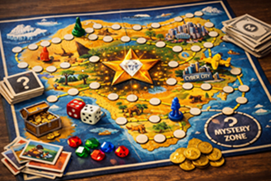

Pelivalikoima
Tuvan pelivalikoimaa voit selata alta kategorioittain. Sama peli voi esiintyä osana usemapaa kategoriaa.
Pelaamisesta veloitetaan neljän euron vuokra, jolla ylläpidetään ja päivitetään pelivalikoimaa. Voit ehdottaa valikoimaamme peliä tästä.

Brass: Birmingham

Terraforming Mars

Shakki
Shakki
